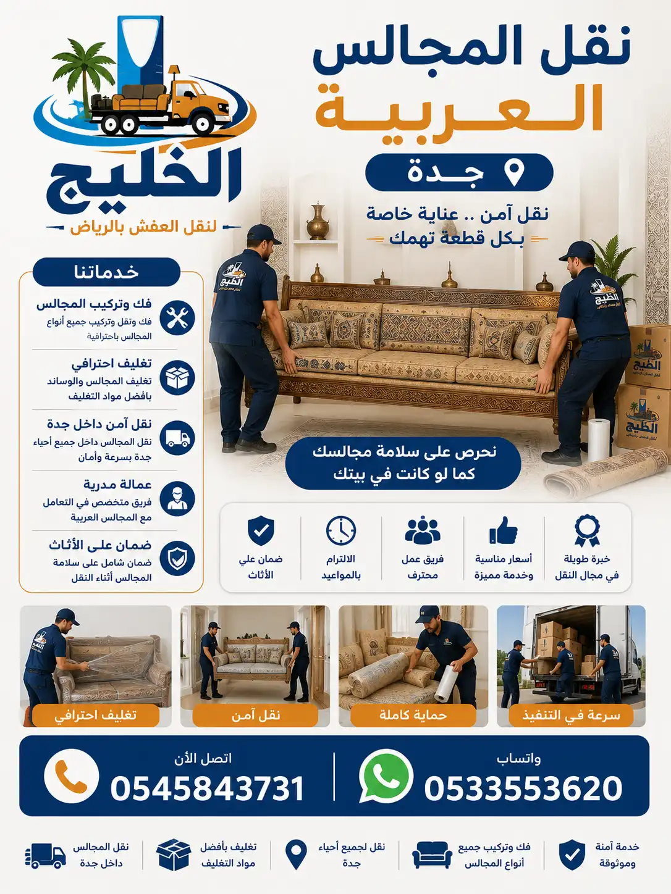
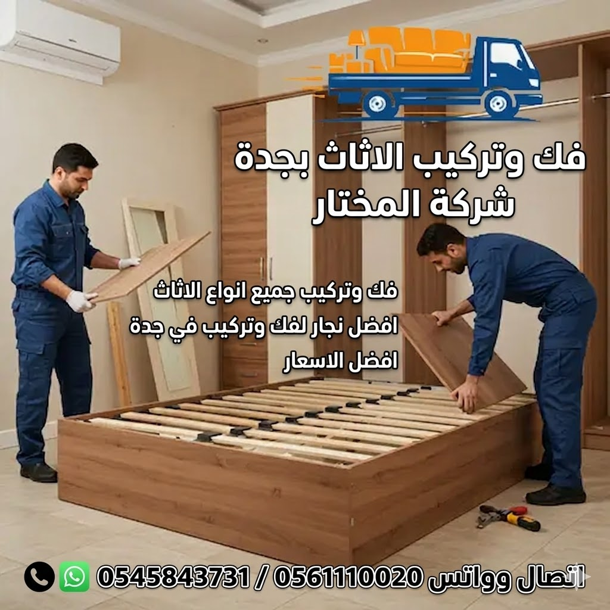

شركة نقل عفش جدة المتخصصة في نقل المجالس العربية بجدة بأعلى معايير الجودة والدقة
تعتبر شركة نقل عفش جدة المختار من أفضل الشركات المتخصصة في نقل المجالس العربية بجدة. المجالس العربية هي رمز للكرم والضيافة في الثقافة السعودية، وتتميز بتصاميمها الفاخرة وخشبها الثمين وزخارفها الجميلة. لذلك، فإن نقل المجالس العربية يتطلب خبرة خاصة وحرفية عالية لضمان عدم تعرضها لأي خدش أو كسر أثناء عملية النقل. نحن في شركة نقل مجالس عربية بجدة ندرك قيمة هذه المجالس وما تحمله من معانٍ عائلية وتراثية، لذا نتعامل معها بأقصى درجات الدقة والاحترام.
تعد خدمات نقل العفش داخل جدة من خدماتنا الأساسية، حيث نغطي جميع أحياء جدة لنقل المجالس العربية من مكان إلى آخر بكل سهولة وأمان. كما أن فك وتركيب الأثاث بجدة هو تخصصنا الرئيسي، فالمجالس العربية تحتاج إلى تفكيك دقيق للأجزاء الكبيرة مثل الديوانات والكنب الكبيرة، مع الحفاظ على الزوايا والوصلات الخشبية. تغليف وحماية الأثاث هو ما نميز به أنفسنا، حيث نستخدم أغطية قماشية ناعمة وبلاستيك فقاعي عالي الجودة لحماية المجالس من الغبار والخدوش.
يمتد خبرتنا إلى نقل المكاتب والشركات بجدة وكذلك نقل أثاث المنازل والفلل بجدة، مما يجعلنا الخيار الأمثل لنقل المجالس العربية سواء كانت في المنازل أو الفلل أو القصور. نقدم خدمة نقل مجالس عربية بجدة شاملة من الفك إلى التركيب، مع ضمان سلامة جميع القطع والزخارف. فريقنا المدرب يعرف تماماً كيفية التعامل مع أنواع الخشب المختلفة مثل خشب الزان والجوز والماهوجني، وكيفية فك وتركيب المجالس دون ترك أي أثر.
نحن ندرك أن المجلس العربي هو قلب المنزل في الثقافة السعودية، حيث يجتمع الأهل والأصدقاء. لذا، نعمل على تقديم خدمة شركة نقل عفش جدة التي تضمن لك نقل مجلسك العربي بأمان تام، مع الالتزام بالمواعيد وتقديم أسعار تنافسية. أفضل شركة نقل مجالس عربية بجدة هي التي تقدم خدمة متكاملة تشمل الفك والتركيب والتغليف والنقل بواسطة سيارات مجهزة. نحن نقدم لك كل ذلك وأكثر، مع خدمة عملاء متوفرة على مدار الساعة للإجابة عن جميع استفساراتك.

نقدم في شركة نقل مجالس عربية بجدة المختار مجموعة شاملة من خدمات نقل المجالس العربية جدة التي تشمل جميع أنواع المجالس العربية بأنواعها المختلفة. تتنوع المجالس العربية بين المجالس الرجالية والمجالس النسائية والمجالس العائلية، ولكل منها تصميم خاص يحتاج إلى طريقة نقل مختلفة. خدمات نقل العفش داخل جدة لدينا تغطي جميع هذه الأنواع. نتعامل مع المجالس المصنوعة من أجود أنواع الخشب الطبيعي والمطعمة بالصدف والعاج، والمزينة بالنقوش الإسلامية والزخارف التراثية، وكلها تحتاج إلى عناية خاصة أثناء النقل.
تتميز المجالس الرجالية عادة بكبرها وثقلها، حيث تحتوي على كنب كبير وطاولات مركزية ثقيلة. نقوم بنقل هذه المجالس بفريق متخصص يستخدم أدوات خاصة لرفع القطع الثقيلة دون خدش الأرضيات أو إتلاف الأثاث. نستخدم سيارات مجهزة بأرضيات خشبية لحماية قاعدة المجالس من أي اهتزاز. فك وتركيب الأثاث بجدة لفريقنا يشمل تفكيك القطع الكبيرة إلى أجزاء يمكن نقلها بسهولة ثم إعادة تركيبها في الموقع الجديد بنفس الدقة.
المجالس النسائية غالباً ما تكون أكثر أناقة وتفصيلاً، وتحتوي على أقمشة حريرية وقطع زجاجية وديكورات دقيقة. نوليها عناية فائقة أثناء التغليف والنقل، باستخدام أغطية ناعمة وبلاستيك فقاعي مضاد للصدمات. تغليف وحماية الأثاث لدينا يشمل طبقات متعددة من الحماية للقطع الحساسة.
المجالس العائلية تجمع بين الأناقة والراحة، وتحتوي على كنب كبير وطاولات ووحدات تخزين. نقوم بنقلها مع مراعاة توزيع القطع حسب التصميم الداخلي للمكان الجديد، مع تقديم استشارات مجانية حول أفضل طريقة لترتيب المجلس الجديد. نقل المكاتب والشركات بجدة اكتسبنا منه خبرة في تنظيم المساحات الكبيرة، مما يساعدنا في تقديم نصائح قيمة لترتيب المجالس في المنازل الجديدة.
المجالس التراثية والفاخرة هي قطع فنية لا تقدر بثمن، وتحتوي على تحف ومشغولات يدوية وزخارف دقيقة. نتعامل معها كقطع متحفية، حيث نوفر تغليفاً خاصاً وحماية فائقة، مع توثيق كل قطعة بتقارير مصورة قبل وبعد النقل لضمان سلامتها. نقل أثاث المنازل والفلل بجدة يجعلنا نتعامل مع المجالس التراثية بشكل دوري، مما أكسبنا خبرة لا تضاهى في هذا المجال.
تشمل ملحقات المجالس العربية السجاد الفاخر، الوسائد المطرزة، الستائر الثقيلة، الإكسسوارات الزجاجية، التحف البرونزية، والأواني الفخارية. نقوم بتغليف كل قطعة بشكل منفصل باستخدام مواد خاصة تناسب نوعها، مع وضع علامات تعريفية لتسهيل عملية الترتيب في الموقع الجديد.

نقدم فك وتركيب مجالس عربية جدة بواسطة فريق من النجارين المتخصصين الذين يمتلكون خبرة طويلة في التعامل مع جميع أنواع المجالس العربية. فك المجالس الخشبية يتم بعناية فائقة، حيث نقوم بتفكيك الأجزاء الكبيرة مثل الكنب (الديوان) إلى قطع أصغر لتسهيل النقل، مع مراعاة الزوايا والوصلات الخشبية. نستخدم أدوات خاصة مصممة خصيصاً للتعامل مع الخشب الثمين، ونقوم بوضع براغي ومسامير كل قطعة في أكياس مخصصة مع كتابة رقمها لتسهيل عملية إعادة التركيب.
فك وتركيب الزخارف والنقوش هو فن بحد ذاته، فالمجالس العربية غالباً ما تحتوي على نقوش إسلامية وزخارف خشبية دقيقة تحتاج إلى خبرة خاصة. فريقنا مدرب على فك هذه الزخارف دون كسرها أو خدشها، وإعادة تركيبها في الموقع الجديد بنفس الدقة والتناسق. خدمات فك وتركيب الأثاث بجدة لدينا تشمل أيضاً فك وتركيب الأبواب الخشبية الفاخرة والنوافذ المشغولة يدوياً التي تزين المجالس العربية.
نحن نقدم أيضاً فك وتركيب السجاد والموكيت الفاخر الموجود في المجالس العربية، حيث نقوم بلفه بأغطية خاصة ونقله دون تعريضه لأي أوساخ أو تمزق. خدمات نقل العفش داخل جدة لدينا تضمن وصول السجاد إلى وجهته الجديدة بنفس رونقه وجودته. فريقنا أيضاً لديه خبرة في تركيب الستائر الثقيلة المزينة بالرسومات الإسلامية، والتي تتطلب مهارة خاصة في التعليق والتناسق مع ديكور المجلس.
تغليف المجالس العربية قبل النقل هو أهم مرحلة في عملية النقل، فهي تضمن وصول المجالس بحالة ممتازة دون أي خدش أو تلف. خدمات تغليف وحماية الأثاث لدينا تشمل تغليف المجالس الخشبية بأغطية قماشية ناعمة لحماية الخشب من الخدوش، ثم طبقة من البلاستيك الفقاعي عالي الكثافة لامتصاص الصدمات، وأخيراً طبقة من الكرتون المقوى للحماية من الصدمات الخارجية. نستخدم أيضاً زوايا كرتونية خاصة لحماية زوايا المجالس من الكسر، وهي أكثر الأجزاء تعرضاً للتلف أثناء النقل.
نوفر تغليف الوسائد والمخدات الفاخرة بأكياس بلاستيكية محكمة الغلق لحمايتها من الغبار والرطوبة، مع وضع علامات على كل كيس لتحديد مكانها في المجلس الجديد. تغليف الإكسسوارات والتحف يتم بطبقات متعددة من البلاستيك الفقاعي مع صناديق مخصصة مبطنة بالفوم، لضمان عدم تعرض أي قطعة زجاجية أو خزفية للكسر. نقل أثاث المنازل والفلل بجدة أكسبنا خبرة واسعة في تغليف التحف الثمينة التي تزين المجالس العربية الفاخرة.
نستخدم مواد تغليف صديقة للبيئة وعالية الجودة، حيث نحرص على استخدام مواد قابلة لإعادة التدوير قدر الإمكان. خدمات نقل العفش داخل جدة لدينا تشمل أيضاً تقديم استشارات مجانية حول أفضل طرق التغليف حسب نوع الخشب وحجم المجلس. نقدم خدمة التغليف في الموقع حيث نرسل فريقاً متخصصاً إلى منزلك لتغليف المجلس بأكمله في مكانه، مما يقلل من فرص التعرض للتلف أثناء نقل القطع إلى الشاحنة.
نمـتلك أسطولاً حديثاً من سيارات نقل المجالس العربية بجدة التي تناسب جميع الأحجام والأنواع. سيارات صغيرة للمجالس الصغيرة مناسبة للشوارع الضيقة ولنقل المجالس الصغيرة في الشقق، شاحنات كبيرة للمجالس الفاخرة لنقل المجالس الكبيرة والقصور، وسيارات مجهزة لنقل المجالس العربية بنظام تعليق ممتص للصدمات وأحزمة تثبيت خاصة وأرضيات مغطاة بالسجاد الناعم لحماية قواعد المجالس. سيارات نقل العفش داخل جدة لدينا تعمل على مدار الساعة لتلبية احتياجاتك في أي وقت، مع توفير سيارات إضافية في حال وجود أكثر من مجلس يحتاج إلى النقل في وقت واحد.
جميع سياراتنا مجهزة بأنظمة تتبع GPS لتحديد موقع الشحنة في أي وقت، مما يمنحك راحة البال ويمكنك من متابعة عملية النقل خطوة بخطوة. نقل المكاتب والشركات بجدة جعلنا نطور أسطولنا ليكون مناسباً لأكبر وأثقل القطع. نوفر أيضاً سيارات مكيفة للمجالس التي تحتوي على أجهزة إلكترونية أو قطع حساسة للحرارة، لضمان وصولها بحالة ممتازة. نقل أثاث المنازل والفلل بجدة يشمل توفير سيارات مناسبة لجميع أنواع المجالس.
زيارة مجانية لتقييم حجم المجلس وتقديم عرض سعر
فك المجلس وترقيمه وتغليفه بمواد عالية الجودة
تحميل قطع المجلس في السيارة بشكل منظم وآمن
نقل سريع وآمن إلى الموقع الجديد
تركيب المجلس وتنظيف الموقع
تعتمد أسعار نقل المجالس العربية بجدة على عدة عوامل: حجم المجلس، عدد القطع، المسافة، خدمة الفك والتركيب، خدمة التغليف، نوع الخشب، وعدد العمال. شركة نقل عفش جدة لدينا تقدم أسعاراً تنافسية جداً، حيث نقدم خصومات تصل إلى 25% للحجوزات المبكرة وللمجالس الكبيرة. إليك جدول تقريبي للأسعار:
| نوع المجلس | السعر التقريبي | ملاحظات |
|---|---|---|
| مجلس صغير (قطعتين) | 350 – 550 ريال | بدون فك وتركيب |
| مجلس متوسط (3-5 قطع) | 650 – 950 ريال | مع الفك والتركيب |
| مجلس كبير (6-8 قطع) | 1100 – 1600 ريال | مع التغليف الكامل |
| مجلس فاخر (أكثر من 8 قطع) | 1800 – 2800 ريال | تغليف خاص + فك وتركيب |
| مجلس تراثي | 2500 – 4000 ريال | عرض خاص حسب القطع |
الاستعانة بـ شركة نقل عفش جدة متخصصة في نقل المجالس العربية بجدة يوفر عليك الكثير من الوقت والجهد والتكاليف الخفية. أفضل شركة نقل مجالس عربية بجدة تضمن لك سلامة المجالس والأثاث الثمين، وتقلل من فرص التعرض للخدوش أو الكسر. خدمات نقل العفش داخل جدة من شركة المختار تضمن لك نقل مجلسك بأمان تام. نقل المجالس بدون تلف ونقل المجالس بأسرع وقت هما ما نضمنه لك. تغليف وحماية الأثاث الذي نقدمه يضمن وصول المجالس بنفس الجودة التي كانت عليها.
نحن نقدم أيضاً استشارات مجانية حول ترتيب المجالس في الموقع الجديد، حيث يستفيد فريقنا من خبرته في نقل المكاتب والشركات بجدة ونقل أثاث المنازل والفلل بجدة لتقديم أفضل النصائح حول توزيع قطع المجلس بشكل يتناسب مع مساحة الغرفة الجديدة وإضاءتها وتصميمها الداخلي. هذا يساعدك على الاستمتاع بمجلسك الجديد منذ اليوم الأول.
إليك أهم نصائح لنقل المجالس العربية بنجاح: 1. التخطيط المبكر: حدد موعد النقل قبل أسبوعين على الأقل. 2. إعداد قائمة جرد بجميع قطع المجلس. 3. تصوير كل قطعة قبل النقل لتوثيق حالتها. 4. إزالة الإكسسوارات والتحف من على الطاولات. 5. اختيار أفضل شركة نقل عفش جدة متخصصة في نقل المجالس العربية. 6. تجهيز الموقع الجديد قبل النقل. 7. التأكد من أن المداخل تسمح بدخول قطع المجلس الكبيرة. نصائح نقل العفش داخل جدة من شركة المختار تضمن لك انتقالاً خالياً من المشاكل.
ننصح أيضاً بـ فك الستائر والأقمشة قبل النقل لتجنب اتساخها أو تمزقها، وتغليف الزوايا الحادة بمواد ناعمة لحماية الجدران والأبواب أثناء عملية النقل. فك وتركيب الأثاث بجدة لدينا يتم وفق أعلى المعايير المهنية، مما يضمن لك عدم تعرض أي قطعة للتلف. كما ننصح بـ تجهيز أدوات التنظيف في الموقع الجديد لتنظيف المجلس بعد التركيب مباشرة.
أفضل وقت لنقل المجالس العربية هو خلال فصل الربيع أو الخريف حيث تكون درجات الحرارة معتدلة، مما يقلل من تأثير الحرارة على الخشب والأقمشة. كما يُفضل النقل في الصباح الباكر أو بعد غروب الشمس لتجنب حرارة منتصف النهار. خدمات نقل العفش داخل جدة لدينا تعمل على مدار الساعة، ونحن نوفر خدمة النقل الليلي وفي أيام العطلات بأسعار خاصة.
ننصح أيضاً بتجنب نقل المجالس في أيام الأمطار لأن الرطوبة قد تؤثر على الخشب والأقمشة، وإذا كان النقل ضرورياً فإننا نستخدم أغطية مقاومة للماء لحماية المجالس. تغليف وحماية الأثاث لدينا يشمل توفير أغطية مقاومة للرطوبة لجميع الظروف الجوية. نقل المكاتب والشركات بجدة أكسبنا خبرة في التعامل مع جميع الظروف الجوية.
| حجم المجلس | شركة المختار | متوسط السوق | التوفير |
|---|---|---|---|
| مجلس صغير (قطعتين) | 350-550 ريال | 500-750 ريال | توفير 30% |
| مجلس متوسط (3-5 قطع) | 650-950 ريال | 850-1200 ريال | توفير 25% |
| مجلس كبير (6-8 قطع) | 1100-1600 ريال | 1400-1900 ريال | توفير 23% |
| مجلس فاخر (أكثر من 8 قطع) | 1800-2800 ريال | 2200-3500 ريال | توفير 20% |
| المادة | شركة المختار | الشركات الأخرى |
|---|---|---|
| البلاستيك الفقاعي | 3 طبقات - سمك 10 مم | طبقة واحدة - سمك 3 مم |
| أغطية الخشب | قماش قطني ناعم | بلاستيك رقيق |
| زوايا حماية | كرتون مقوى + فوم | كرتون عادي |
| صناديق الإكسسوارات | فوم مخصص لكل قطعة | كرتون عادي |
| الخدمة | شركة المختار | الشركات الأخرى |
|---|---|---|
| ضمان سلامة المجلس | 3 أشهر | أسبوع أو لا يوجد |
| تنظيف الموقع بعد النقل | نعم شامل | نادراً |
| تركيب المجلس وتنظيمه | نعم مع إعادة التنظيم | تركيب أساسي فقط |
| تأمين ضد التلف | تصل إلى 20,000 ريال | غير متوفر |
| نوع الخدمة | شركة المختار | متوسط السوق |
|---|---|---|
| الوصول إلى الموقع | خلال 30 دقيقة | خلال 60-90 دقيقة |
| فك مجلس متوسط | 30-45 دقيقة | 60-90 دقيقة |
| نقل داخل جدة | ساعتين كحد أقصى | 3-4 ساعات |
نخدم جميع أحياء جدة وجميع مدن المملكة في نقل المجالس العربية بجدة. إليك قائمة بأهم الأحياء والمدن:
تبدأ أسعار نقل المجالس العربية بجدة من 350 ريال للمجلس الصغير وتختلف حسب الحجم والمسافة والخدمات المطلوبة. اتصل بنا للحصول على عرض سعر مجاني.
شركة المختار هي أفضل شركة نقل مجالس عربية بجدة بفضل خبرتها الطويلة وفريقها المتخصص وأسعارها المناسبة.
نعم، نوفر فك وتركيب جميع أنواع المجالس العربية بواسطة نجارين متخصصين في المجالس الفاخرة.
نستخدم أغطية قماشية ناعمة وبلاستيك فقاعي عالي الجودة وزوايا كرتونية لحماية المجالس من الخدوش والصدمات.
نعم، لدينا فريق متخصص في نقل المجالس التراثية والفاخرة بأعلى معايير الأمان والحماية.
تستغرق عملية نقل مجلس متوسط من 3 إلى 5 ساعات حسب حجمه والخدمات المطلوبة.
نعم، نقدم خدمة النقل الليلي وفي أيام العطلات لتوفير الراحة لعملائنا.
نعم، نقدم تأميناً على المجالس يصل إلى 20,000 ريال سعودي ضد أي ضرر.
نعم، نمتلك سيارات مجهزة بأرضيات مغطاة بالسجاد وأحزمة تثبيت خاصة للمجالس.
نضع خطة نقل مخصصة لكل مجلس مع جدول زمني مفصل ومتابعة مستمرة من فريقنا.
نعم، لدينا مستودعات تخزين مكيفة وآمنة للتخزين المؤقت أو طويل المدى للمجالس.
نعم، نقدم خصومات خاصة للمجالس الكبيرة والقصور حسب حجم النقل وتكراره.
نعم، نرسل فريقاً للمعاينة المجانية وتقديم عرض سعر مفصل لجميع عملائنا.
نعم، نقوم بتنظيف المجلس بالكامل بعد التركيب وإزالة جميع مواد التغليف.
يمكنك الاتصال على 0561110020 أو عبر واتساب 0561110020 على مدار الساعة.
احصل على أفضل خدمة نقل مجالس عربية في جدة مع شركة المختار - فك وتركيب وتغليف ونقل بأعلى معايير الجودة والدقة